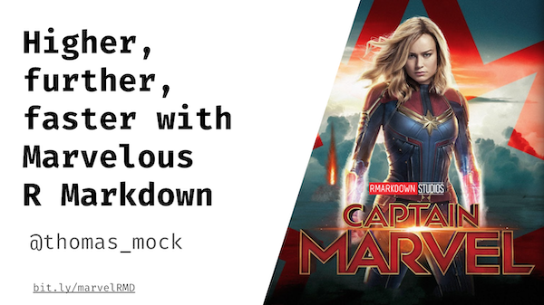

─ Session info ───────────────────────────────────────────────────────────────
setting value
version R version 4.2.0 (2022-04-22)
os macOS Monterey 12.2.1
system aarch64, darwin20
ui X11
language (EN)
collate en_US.UTF-8
ctype en_US.UTF-8
tz America/Chicago
date 2022-04-28
pandoc 2.18 @ /Applications/RStudio.app/Contents/MacOS/quarto/bin/tools/ (via rmarkdown)
quarto 0.9.294 @ /usr/local/bin/quarto
─ Packages ───────────────────────────────────────────────────────────────────
package * version date (UTC) lib source
sessioninfo * 1.2.2 2021-12-06 [1] CRAN (R 4.2.0)
[1] /Library/Frameworks/R.framework/Versions/4.2-arm64/Resources/library
──────────────────────────────────────────────────────────────────────────────
NYR Presentation

My slides on this topic for the NYC R Conference are at bit.ly/marvelRMD.
PDF Version for folks who want to try out the code-chunks.
How Alison Hill teaches R Markdown
If you haven’t read it already make sure to read Dr. Alison Hill’s fantastic blogpost:How I teach R Markdown
Alison is a RMarkdown superstar on the RStudio Education team. Her blogpost covers her guide on her well-informed approach for teaching R Markdown.
She has taught:
- College students as a professor across a semester
- In person professional learners at RStudio::conf in 1-2 day workshops
- Digital Learners in Pharma/Finance/etc via shorter online workshops
To summarize her post:
-
Make it. Make it again. - Show how knitting works throughout the process.
-
Make it pretty - Engage your learners with visuals, tables, etc - motivation is key!
-
Make it snappy - Get a shareable link the first 20 min (usually via Netlify Drop).
-
Make it real - “Teach folks what they need to know to actually use the tool productively in real life.”
- Make it easy - “People will only keep using R Markdown if they see it making their life easier. So show them how. For example, the RStudio IDE has some very nice built-in features that make it much easier to be an R Markdown user.”
Again - GO READ her blogpost for additional links and guides she links to.
My blogpost below is meant to be a sister article to hers, framed with a similar approach we use in Customer Success but different in that we’re not doing as much long-form education. Alison’s approach is well-informed and very useful in the context of direct teaching activity, which is why I wanted to share it as well!
How I share knowledge around R Markdown
I work on a different team than Alison at RStudio, specifically I’m a Customer Success Manager. This means that I work with existing RStudio Pro Product customers, most often people who have RStudio Connect. I work exclusively with High Tech/Software customers, meaning that they are typically already doing very sophisticated work with R in production, and I’m helping them further eliminate friction or empower their data science teams to do more with R.
A core part of my job is knowledge sharing around how to use open-source software like R Markdown with or without our Pro Products. Thus most of my work is Strategic in nature, although I do often give shorter 30-60 min training sessions that are Tactical.
A strategy is a set of guidelines used to achieve an overall objective, whereas tactics are the specific actions aimed at adhering to those guidelines. Source: Wikipedia
Thus my usual framing is covering topics that inform the learner of new strategies (ways of solving a problem) without necessary having to teach all the tactics (nuts and bolts of how it all works).
This post will focus on 4 core strategies of why R Markdown is SO useful and absolutely worth learning with links to external tactics/guides/write-ups of how to accomplish the various tasks.

R Markdown for Literate Programming
Goal: Capture code, text/comments, and output in a single document
This is the most common use of R Markdown, and is often how it is taught in University coursework. R Markdown is a tool for Literate Programming, and in summary is:
A programming paradigm introduced by Donald Knuth in which a computer program is given an explanation of its logic in a natural language, such as English, interspersed with snippets of macros and traditional source code, from which compilable source code can be generated.
Not just for R
R Markdown obviously has rich support for R-based code and data products, but did you know it also supports:
- Native Python or calling Python from R via reticulate
- SQL - Blog post by Irene Steves
- CSS or JavaScript for all sorts of customization
- As well as Bash, Rcpp, Stan, and other formats
- All together there are 52(!) possible language engines coming from knitr
MVP of Reproducibility
Whether you talk about Minimum Viable Product or Most Valuable Player, it works! Since R Markdown is a form of Literate Programming, you can write all of your comments, notes, and execute your code within it.
- R Markdown HAS to run successfully to save/knit the output
- R Markdown is self-documenting (the code is embedded)
- The code is
diffableand easily human readable in version control
- Self-contained workspace
Exploratory Data Analysis
An example here is for Dave Robinson’s #TidyTuesday screencasts + code
- Dave uses R Markdown to explore a brand new dataset each week, capturing his comments and train of thought as he tests the data, performs basic analyses, and moves towards a modeling or deliverable data product

R Markdown as a Data Product
Goal: Generate output natively in R for consumption
This is typically the second most common use of R Markdown. Since R Markdown can knit to all sorts of different formats, it is a powerful tool for creating data products like:
Presentations
- Powerpoint
- Web-formats -
xaringan(remark.js)
- LateX formats - Beamer
Dashboards with flexashboard
- Lets you quickly build beautiful dashboards with either static or reactive components
Reports
- Supports HTML Documents, PDF, Word and many others
Entire Websites
-
blogdownfor easily extensible custom websites or blogs
-
distillfor scientific writing, native to the web (this website is built indistill)
Most importantly these formats are created with code, so you get the benefit of reproducibility, automation, etc while still generating data products in the format your non-coder colleagues expect.

R Markdown as a Control Document
Goal: Scale data science tasks, automate the boring stuff, create robust pipelines
Less widely known, but just as important is the idea of R Markdown as a meta-document that lets you bring in other code or automate processes.
As it’s much larger in scope than a single bullet point I’d recommend going to read Emily Riederer’s blog post on Rmarkdown Driven Development. It’s “an approach of using R Markdown within the larger scope of the analysis engineering concept” presented by Hilary Parker.
A brief summary of her blogpost:
I tend to think of each RMarkdown as having a “data product” (an analytical engine calibrated to answer some specific question) nestled within it. Surfacing this tool just requires a touch of forethought before beginning an analysis and a bit of clean-up afterwards.
In this post, I describe RMarkdown Driven Development: a progression of stages between a single ad-hoc RMarkdown script and more advanced and reusable data products like R projects and packages. This approach has numerous benefits.
Automation w/ parameters
- Parameters are data passed to the R Markdown document to generate new outputs from the same code.
- An example here is generating a report for all 50 US states.
- Rather than writing 50 reports manually, you can pass a parameter of
stateto the R Markdown report and render 50x reports at once!
- The input R Markdown is always the same, but you pass each state as a parameter programatically to generate a new report for EACH state with it’s data.
- Rather than writing 50 reports manually, you can pass a parameter of
-
Paramaterized reports
-
Parameterized report cookbook
- Parameterized Reports site
Child Documents
- Child documents allow you to bring in OTHER RMarkdown code/documents into a parent, meaning you can use the parent document as a meta-document referencing code/outputs in other documents.
- This can greatly help with the flow/size of a single document and you can essentially modularize portions of the document.
- It’s worth noting that you should read Emily’s post above on building up a robust R Markdown workflow.
-
Child Documents
- Child Documents - Yihui’s Blog
RMarkdown for Emails w/ blastula
- While this is technically a data-product, because it is generating an email I’m putting it as a Control Document. The short of this is that
blastulaprovides a framework to generate HMTL emails from R Markdown, which are then sent by an email server or RStudio Connect.- This Blastula Webinar covers a lot of the use cases, all with code and real-life applications
R Markdown + RStudio Connect as an execution engine
R Markdown is a first-class citizen on RStudio Connect, and you can interactively generate new reports based on parameters, or schedule R Markdown documents to re-execute documents on a schedule.
Code for ETL - an example of an ETL process through an automated R Markdown report, this could query against a SQL database or a
sparkcluster to process ETL jobs, all on a schedule down to the minute or up to a year.Scheduled reporting - maybe your boss needs a report built every Monday? You can do that too - pulling in new data and re-generating a report on a specific time-schedule all with no need for human intervention.
Emailing w/
blastula- maybe your boss is too busy to consume a full report every day - send a conditional email directly to them if a specific number is hit or missed all with code in R! This email could is built with R Markdown, and could contain plots, tables, raw data, or attach ANY R Markdown-based document (so… basically anything).

RMarkdown for Templating
Goal: Don’t repeat yourself, generate input templates or output documents from code.
Using R Markdown for templating is normally thought of for knitr::render() + parameters, but there’s additional techniques to solve specific problems that don’t fit neatly into paramaterized reports as well.
Knitting w/ knit::render()
- This is the first step towards using a template, and lets you generate R Markdown outputs programatically with code. It can be coupled with parameters or with other arguments for outputs locations, etc.
Looping outputs
- This is really still focused at data products, but programmatically building up portions WITHIN a document.
- In this example, I’m taking a single function and using
purrr::walk()to generate new outputs from a template within the R Markdown report. - Note that for the chunk that outputs the repeated portions, you have to set
results="asis"in the chunk option.
- In this example, I’m taking a single function and using
Minimal example below with the palmerpenguins dataset. Full copy-pastable code at: https://git.io/JJBcC.
Note that I’m writing one function and calling it n times, it would loop across all the data based on the different inputs.
---
output: html_document
---
```{r penguin function, echo=FALSE, message=FALSE}
library(dplyr)
library(ggplot2)
library(palmerpenguins)
library(glue)
penguins <- palmerpenguins::penguins
multiplot <- function(penguin_name){
cat(glue::glue(" \n### {penguin_name} \n \n"))
df_pen <- penguins %>%
filter(as.character(species) == penguin_name) %>%
na.omit()
flipper_len <- df_pen %>%
summarize(mean = mean(flipper_length_mm)) %>%
pull(mean) %>%
round(digits = 1)
bill_len <- df_pen %>%
summarize(mean = mean(bill_length_mm)) %>%
pull(mean) %>%
round(digits = 1)
cat(
glue::glue("There are {nrow(df_pen)} observations of {penguin_name} penguins. The average flipper length is {flipper_len} and the average bill length is {bill_len}. \n")
)
plot_out <- df_pen %>%
ggplot(aes(x = bill_length_mm, y = flipper_length_mm)) +
geom_point() +
labs(x = "Bill Length", y = "Flipper Length", title = penguin_name)
print(plot_out)
cat(" \n \n")
}
```
```{r loop output,fig.width=6,echo=FALSE,message=FALSE,results="asis"}
purrr::walk(unique(as.character(penguins$species)), multiplot)
```
<!-- https://git.io/JJBcC -->Which generates the following document:

whisker
-
whiskeris a templating engine for R conforming to the Mustache specification.
- It uses
gluestyle syntax to add data to templates either in memory or to an output file, where my mental model is it isgluefor documents rather than strings.
- You can include templates from all sorts of inputs, like R files, R Markdown, markdown or plain text.
- These templates can be local directories, or stored in the
instdirectory of an R package.
- Lastly, these can also generate outputs in the same format, eg you can create templates/outputs for R, R Markdown or other plain-text formats!
Minimal whisker example below:
First, some input data:
data <- list(
name = "Chris",
value = 10000,
taxed_value = 10000 - (10000 * 0.4),
in_ca = TRUE
)
Then a template:
template <-
'Hello {{name}}
You have just won ${{value}}!
{{#in_ca}}
Well, ${{taxed_value}}, after taxes.
{{/in_ca}}'Now, fill the template!
text <- whisker.render(template, data)
cat(text)# Output
Hello Chris
You have just won $10000!
Well, $6000, after taxes.I use whisker natively to generate the readme files for each week’s #TidyTuesday submission. Separate blog-post to come for that!
usethis::use_template()
- Alternatively to natively using
whiskerusethis::use_template() provides a more ready to use function, and useswhiskerinternally.-
use_template()Used as the engine for a templating function in other packages.
-
Sharla Gelfand, the “Queen of Reproducible Reporting”, put together lots of material using the usethis::use_template() workflow in their work.
-
Sharla Gelfand’s
use_template()blogpost- In short, they turned an annual report from a mess of copy-pasting and manual work into a fast, streamlined, reproducible, and easily repeatable workflow using R, R Markdown, and
usethis::use_template().
-
Recording of their presentation on the same topic
- Slides for that presentation.
- In short, they turned an annual report from a mess of copy-pasting and manual work into a fast, streamlined, reproducible, and easily repeatable workflow using R, R Markdown, and
Fin
So that’s an overview of my approach to sharing knowledge around R Markdown, and like Alison said:
But remember: there is no one way to learn R Markdown, and no one way to teach it either. I love seeing the creativity of the community when introducing the R Markdown family - so keep them coming!
Expand for Session Info